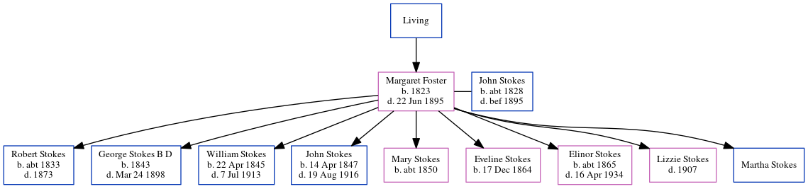

Margaret Stokes (née Foster) 1823 - 1895
[ Home ] | [ Calendar ] | [ Surnames Index ] | [ Census Index ] | [ Family History ]The child of William Foster, Margaret Foster, the 3 times great-grandmother of Michele Copp (née Phillips), was born in Lislea, Larah Parish, Cavan, Ireland in 18231 and married John Stokes (with whom she had 9 children: Robert, Rev. George Thomas B. D., William Foster, John Wesley, Mary Jane, Eveline Charlotte, Elinor Susan, Lizzie and Martha) in Ireland around 1840.
She died on Jun 22, 1895 in Westmeath1,2.
Parents
- William
Children
- Robert was born c. 1833
- Rev. George Thomas B. D. was born in 1843
- William Foster was born on Apr 22, 1845
- John Wesley was born on Apr 14, 1847
- Mary Jane was born c. 1850
- Eveline Charlotte was born on Dec 17, 1864
- Elinor Susan was born c. 1865
Citations
- Ireland, Civil Registration Deaths Index, 1864-1958 Ancestry.com Operations, Inc.
- Web: Ireland, Calendar of Wills and Administrations, 1858-1920 Ancestry.com Operations, Inc.
Family Tree
Generated by ged2site. Last updated on Jun 6, 2024